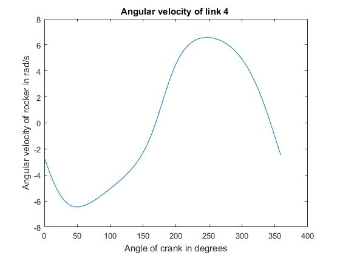
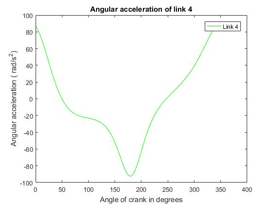
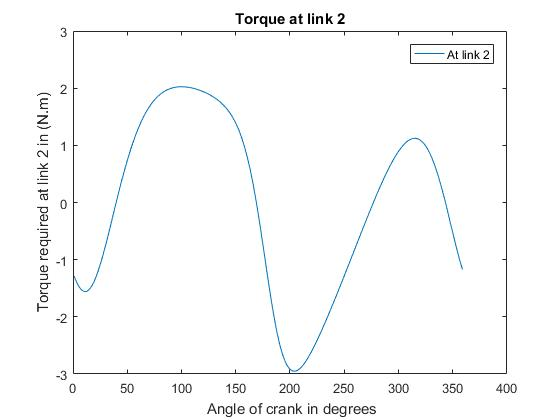
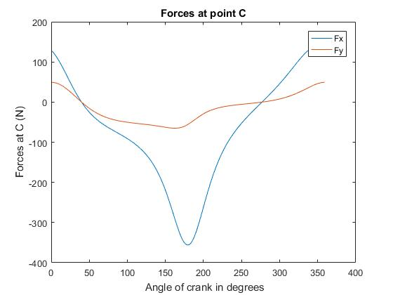

Contents
Assignment 4
l=[120,25,110,40]; [ B,C,f,A,D ]=Datacompiler(l,.01); w = [0,10,0,0]; [ W,a ] = Velacc( l,B,w ); [W] = [B(:,2), W]; plot(360-W(:,1),W(:,3)) title('Angular velocity of link 4 '); xlabel('Angle of crank in degrees'); ylabel('Angular velocity of rocker in rad/s'); pause;
iteration number 10 iteration number 3 iteration number 3 iteration number 3 iteration number 3 iteration number 3 iteration number 3 iteration number 3 iteration number 3 iteration number 3 iteration number 3 iteration number 3 iteration number 3 iteration number 3 iteration number 3 iteration number 3 iteration number 3 iteration number 3 iteration number 3 iteration number 3 iteration number 3 iteration number 3 iteration number 3 iteration number 3 iteration number 3 iteration number 3 iteration number 3 iteration number 3 iteration number 3 iteration number 3 iteration number 3 iteration number 3 iteration number 3 iteration number 3 iteration number 3 iteration number 3 iteration number 3 iteration number 3 iteration number 3 iteration number 3 iteration number 3 iteration number 3 iteration number 3 iteration number 3 iteration number 3 iteration number 3 iteration number 3 iteration number 3 iteration number 3 iteration number 3 iteration number 3 iteration number 3 iteration number 3 iteration number 3 iteration number 3 iteration number 3 iteration number 3 iteration number 3 iteration number 3 iteration number 3 iteration number 3 iteration number 3 iteration number 3 iteration number 3 iteration number 3 iteration number 3 iteration number 3 iteration number 3 iteration number 3 iteration number 3 iteration number 3 iteration number 3 iteration number 3 iteration number 3 iteration number 3 iteration number 3 iteration number 3 iteration number 3 iteration number 3 iteration number 3 iteration number 3 iteration number 3 iteration number 3 iteration number 3 iteration number 3 iteration number 3 iteration number 3 iteration number 3 iteration number 3 iteration number 3 iteration number 3 iteration number 3 iteration number 3 iteration number 3 iteration number 3 iteration number 3 iteration number 3 iteration number 3 iteration number 3 iteration number 3 iteration number 3 iteration number 3 iteration number 3 iteration number 3 iteration number 3 iteration number 3 iteration number 3 iteration number 3 iteration number 3 iteration number 3 iteration number 3 iteration number 3 iteration number 3 iteration number 3 iteration number 3 iteration number 3 iteration number 3 iteration number 3 iteration number 3 iteration number 3 iteration number 3 iteration number 3 iteration number 3 iteration number 3 iteration number 3 iteration number 3 iteration number 3 iteration number 3 iteration number 3 iteration number 3 iteration number 3 iteration number 3 iteration number 3 iteration number 3 iteration number 3 iteration number 3 iteration number 3 iteration number 3 iteration number 3 iteration number 3 iteration number 3 iteration number 3 iteration number 3 iteration number 3 iteration number 3 iteration number 3 iteration number 3 iteration number 3 iteration number 3 iteration number 3 iteration number 3 iteration number 3 iteration number 3 iteration number 3 iteration number 3 iteration number 3 iteration number 3 iteration number 3 iteration number 3 iteration number 3 iteration number 3 iteration number 3 iteration number 3 iteration number 3 iteration number 3 iteration number 3 iteration number 3 iteration number 3 iteration number 3 iteration number 3 iteration number 3 iteration number 3 iteration number 3 iteration number 3 iteration number 3 iteration number 3 iteration number 3 iteration number 3 iteration number 3 iteration number 3 I am in data compiler
plot(360-W(:,1),a(:,2),'g') xlabel('Angle of crank in degrees'); ylabel('Angular acceleration ( rad/s^2)'); title('Angular acceleration of link 4'); legend('Link 4'); pause;
Dynamics of system
Convention different from class notes , hence 6th row of matrix Q is different Equation :{F}+ [Q]{P} = {H}
m=17; % Kg k=45; % in mm d =[60,12.5,110/2,15]; % in mm d(4)=15; % in mm f = l-d; % in mm M=50; % in Nmm % Conversion to m , rad l = l/1000; d = d/1000; f = f/1000; M = M/1000; B = B/180*pi; k = k/1000; P = zeros(length(B),9); for i=1:length(B) F = [0;0;0;0;0;0;0;-17*9.8;M]; H = [0;0;0;0;0;0;m*(-a(i,2)*f(4)*sin(B(i,4))-(W(i,3)^2)*f(4)*cos(B(i,4)) );... m*(-(W(i,3)^2)*f(4)*sin(B(i,4))+a(i,2)*f(4)*cos(B(i,4)));m*a(i,2)*k^2]; Q =zeros(9); Q(1,1)=1;Q(1,3)=1; Q(2,2)=1;Q(2,4)=1; Q(3,1)= d(2)*sin(B(i,2));Q(3,2)= -d(2)*cos(B(i,2));Q(3,3)=-f(2)*sin(B(i,2));Q(3,4)= f(2)*cos(B(i,2));Q(3,9)= 1; Q(4,3)=-1;Q(4,5)=1; Q(5,4)=-1;Q(5,6)=1; Q(6,3)= -d(3)*sin(B(i,3));Q(6,4)= d(3)*cos(B(i,3));Q(6,5)= -f(3)*sin(B(i,3));Q(6,6)= f(3)*cos(B(i,3)); Q(7,5)=-1;Q(7,7)=1; Q(8,6)=-1;Q(8,8)=1; Q(9,5)= d(4)*sin(B(i,4));Q(9,6)= -d(4)*cos(B(i,4));Q(9,7)= f(4)*sin(B(i,4));Q(9,8)= -f(4)*cos(B(i,4)); % pause; P(i,:) = (Q\(H-F))' ; end
B =B*180/pi; plot(360-B(:,2),P(:,9)); xlabel(' Angle of crank in degrees'); ylabel(' Torque required at link 2 in (N.m) '); legend('At link 2 '); title('Torque at link 2'); pause;
plot(360-B(:,2),P(:,3),360-B(:,2),P(:,4)); xlabel(' Angle of crank in degrees'); ylabel(' Forces at B (N) '); legend('Fx ','Fy '); title('Forces at point B'); pause;
plot(360-B(:,2),P(:,5),360-B(:,2),P(:,6)); xlabel(' Angle of crank in degrees'); ylabel(' Forces at C (N) '); legend('Fx ','Fy '); title('Forces at point C');